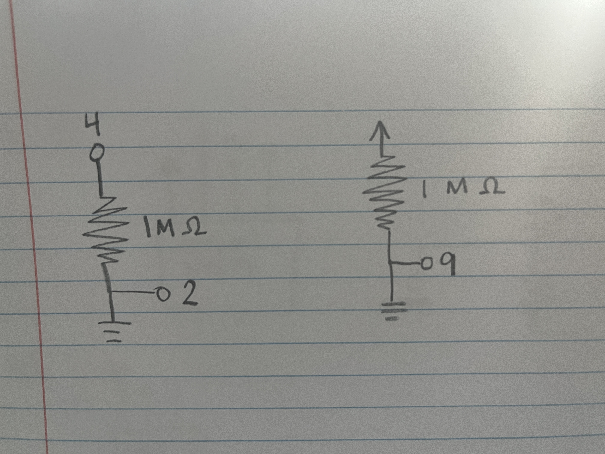

Jency's Assignment 4!

I used a 1M resistor for the capacitive touch by researching which resistor size to use. I learned that a 1M resistor was sensitive enough to respond to touch, but anything higher would have made the capacitive touch sensor oversensitive and may have caused it to respond to additional stimulus, which was why I stuck with 1 megohm. For the speaker, I also used a 1M resistor to help reduce the volume of the sound the speaker was playing at.

Here is a video link for assignment 4! Video Link
Here is all the Aruduino Code for assignment 4!
Arduino Code